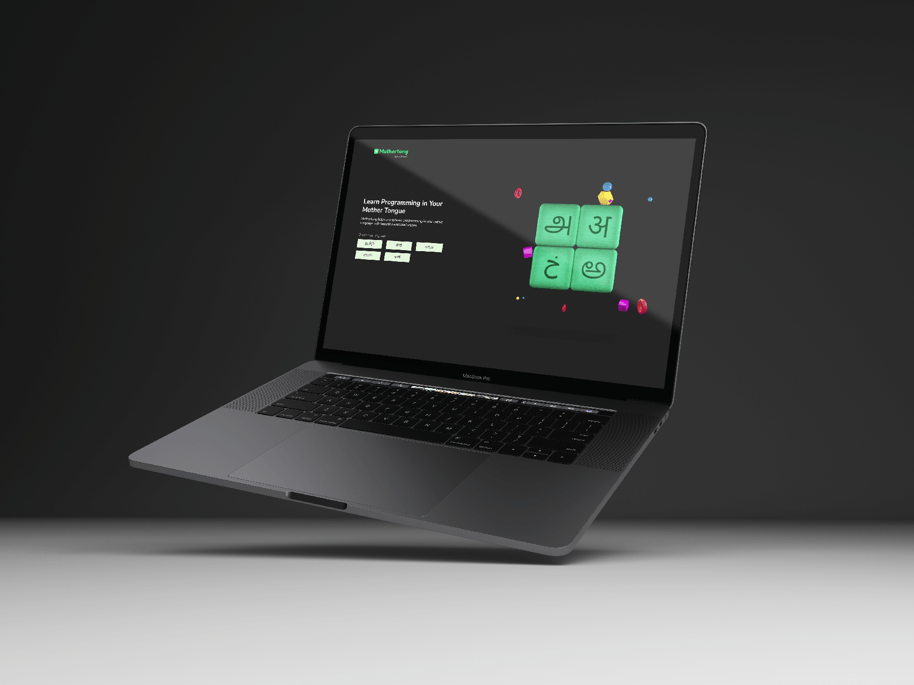

Mothertong — UX Design & Motion Graphics
Complete UX and visual identity for Mothertong, a language-learning sub-product of Log2Base2.
Software Used
Cinema 4D | Premiere Pro | Illustrator | Photoshop
Overview
Mothertong is a language-learning product built as a sub-brand under Log2Base2. It targets a younger, more casual audience than the parent platform — learners who want to explore language through interactive and visual experiences rather than traditional methods. As the creative lead, I was responsible for the entire visual and UX output for Mothertong: brand identity, UI screens, 3D character animation, banner production, and promotional video — all developed to create a product identity that felt warm, approachable, and distinct from Log2Base2 while remaining part of the same ecosystem.
The Challenge
Launching a sub-product under an established brand requires careful calibration — Mothertong needed its own identity strong enough to stand alone, while not feeling disconnected from the Log2Base2 brand that gave it credibility. The visual tone had to shift from Log2Base2's technical, structured aesthetic toward something more playful and culturally expressive, without compromising the production quality standards the parent brand was known for. Creating a 3D character from scratch in Cinema 4D added significant technical complexity to the project timeline.
My Role
I owned every creative output for Mothertong — brand identity and logo design in Illustrator, UI screen design, 3D character modelling and animation in Cinema 4D, animated banner production, and promotional video editing in Premiere Pro. This was a solo creative project with close collaboration with the product team to align visual decisions with product goals and launch timelines.
Design Decisions
The brand palette was built around warmer, more expressive tones compared to Log2Base2's cooler scheme — signalling approachability and creativity. Typography was chosen to feel friendly without being childish, appropriate for a young adult audience. The 3D character was designed to be culturally neutral and versatile — capable of carrying different emotional states across the animation suite. Banner animations were looped and optimised for web use, balancing visual richness with load performance.


Banner Animation
The banner animation was designed to serve as the primary marketing visual for Mothertong's launch campaign. Built as a seamlessly looping GIF, it needed to communicate the product's personality — playful, expressive, and culturally rich — within a compressed file size suitable for web and social distribution. The animation sequence was storyboarded, illustrated in Photoshop, and composited in After Effects before export optimisation.

Making
The behind-the-scenes video documents the production process for the Mothertong 3D character — from initial modelling in Cinema 4D through rigging, animation, and final render. The character was built to support a range of expressive movements and was used across multiple animated assets in the Mothertong launch campaign. Watching the making process gives context to the creative decisions made at each stage of production.
Outcome
The Mothertong visual identity and animated assets were delivered on schedule to support the product launch. The campaign received strong engagement on LinkedIn, where the 3D character animation was highlighted by the Log2Base2 team. The project demonstrated the ability to lead a complex, multi-discipline creative production — from brand strategy and UI design through to 3D animation and video — as a single creative contributor.